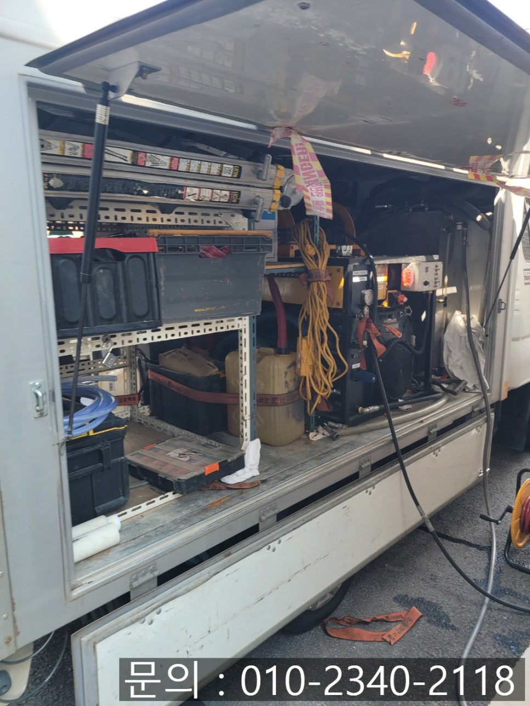
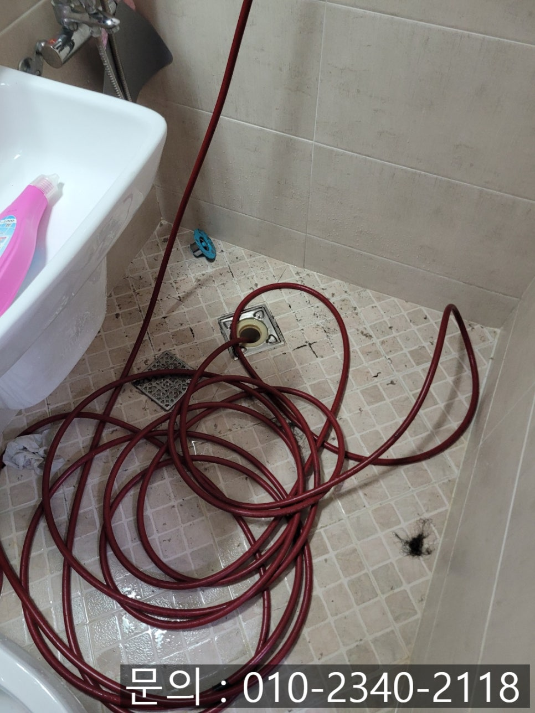
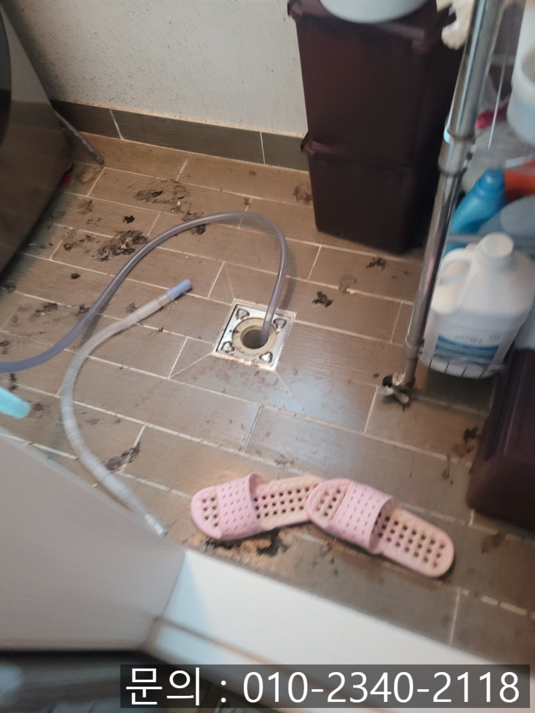
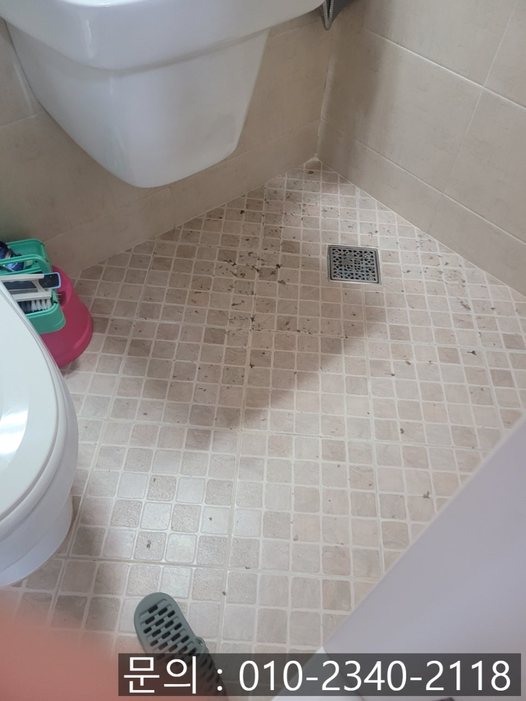
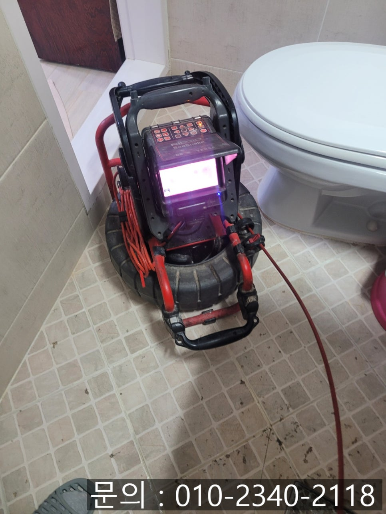
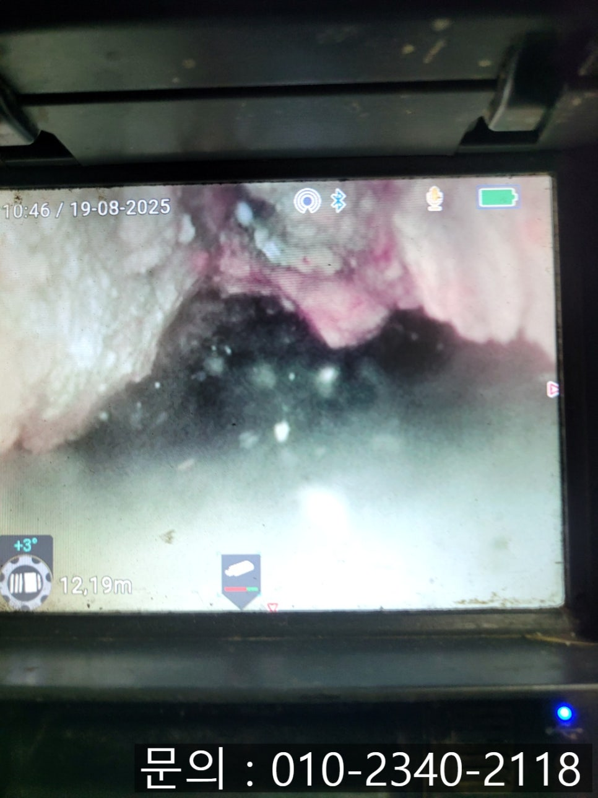

🏠 진안동 하수구 막힘 화성 병점동 빌라 화장실 역류 고압세척 현장
화성 병점 하수구막힘 전문 시공 후기

📋 작업 개요
- 위치: 화성 병점, 병점, 화성
- 서비스 유형: 하수구막힘, 배관막힘, 역류해결, 뚫는업체, 고압세척
- 작업 일시: 2025. 8. 21. 10:00
- 업체명: 하수구수사대 (010-5615-2118)
🔍 문제 상황
안녕하세요.
화성 병점동 빌라 화장실 역류 고압세척 현장 출동하는 에스원 설비입니다.
세탁기가 멈춰 서면 빨래가 쌓이고, 냉장고가 고장 나면 음식이 상하고, 에어컨이 작동하지 않으면 불쾌함이 높아지고 집안의 배관이 막히면 일상 자체가 마비됩니다. 물이 내려가지 않고 역류까지 생기면 위생 문제와 악취가 한꺼번에 찾아오게 되죠.

🔎 원인 분석
💡 전문가 진단: 정밀 진단 장비를 사용하여 슬러지의 고착 여부를 판명하고 타격/세척 작업을 실시했습니다.
이럴 때는 무엇보다 시원하게 뚫어주는 전문 업체를 선택하는 것이 중요합니다. 단순히 장비만 갖춘 업체가 아니라 다양한 현장에서의 경험과 노하우를 겸비한 곳이어야 합니다. 전문 장비는 필수지만, 실제로 어떤 상황에서도 신속하고 정확하게 대처할 수 있는 건 결국 "사람의 경험"에서 비롯되기 때문입니다. 믿고 맡길 수 있는 전문 업체는 에스원 설비라는 것을 잊지 마세요!
빌라 1층에서 발생한 화장실과 세탁실에서 함께 역류가 발생한 문제로 에스원 설비로 다급하게 연락을 주셨어요. 수도권은 1시간 이내로 방문 드릴 수 있어 신속하게 현장으로 출동하였습니다.
진안동 하수구 막힘 현장은 그야말로 물난리 상태였어요. 베란다 쪽 세탁실에서 물이 역류하여 바닥이 엉망이 되어있었고, 고여 있는 물에서 불쾌한 냄새까지 진동했어요. 불편함과 위생도 문제지만, 전기 피해나 배관 파손 등 다른 문제로 이어질 수 있는 심각한 상황이었어요.
1층 세대에서 역류 문제가 자주 발생하는 이유는 구조적인 특성과도 관련이 있는데, 이는 반드시 배관 내시경으로 내부를 정확하게 검사해 봐야만 했습니다.

🔧 작업 과정
배관 내시경으로 점검해 보니, 각종 이물질과 더불어 슬러지가 가득 차 있었어요. 세탁실 배수구 특성상 세제 찌꺼기와 먼지, 머리카락 등이 오랜 시간 동안 쌓였던 것인데요. 물이 내려갈 틈이 없었던 것이었어요.
화성 병점동 빌라 화장실 역류 고압세척 현장에서 작업은 샤프트 장비로 먼저 딱딱하게 달라붙은 찌꺼기들을 갈아내주었어요.
그다음 고압세척 장비를 준비하여 하수구 내부로 진입시켜주었어요. 고압의 물줄기를 쏘아보내 찌꺼기들을 강력하게 밀어내는 과정인데요.
생각보다 많은 양의 슬러지가 쏟아져 나왔어요. 밀려나온 찌꺼기들을 그냥 둘 수 없으니 뜰채를 사용하여 건져내면서 정리해 주었어요.
작업을 마치고 다시 내시경으로 점검해 보니, 아주 깨끗한 상태가 되었어요. 물도 막히지 않고 시원하게 잘 내려가게 되어 속이 다 시원했습니다.


✅ 작업 완료
하수구가 막히는 일은 불편함도 불편하지만, 위생과도 직결되고 안전과도 매우 밀접합니다. 특히 여름철처럼 고온다습한 계절에는 냄새와 벌레가 함께 꼬이기 때문에 빠르고 확실한 조치가 필요합니다. 예방이 최선이지만 비슷한 문제로 불편을 겪고 계시다면 에스원 설비를 찾아주세요. 경험과 노하우로 속 시원하게 해결해 드리겠습니다.
경기도 화성시 동탄중심상가2길 8 4층 401-a51호




⚠️ 하수구 배관 막힘 예방 및 관리 가이드
- ✅ 머리카락, 비닐, 물티슈 등 물에 분해되지 않는 이물질은 하수구 유입을 절대 금지해 주세요.
- ✅ 하수구 거름망을 씌우고 모여진 이물질은 주기적으로 쓰레기통에 바로 비워주셔야 합니다.
- ✅ 배관 노후가 심할 경우 이물질이 더 쉽게 걸리므로 주기적인 배관 세척(고압세척 등)을 권장합니다.
- ✅ 작업 후 1년 이내 재발 시 하수구수사대에서 무상 A/S 보증 서비스를 제공합니다.
💡 핵심 정리
- 확실한 장비 작업(내시경 점검 및 샤프트 스케일링)으로 원인을 뿌리 뽑습니다.
- 작업 후 1년 이내에 동일한 부위 재발 시 100% 무상 A/S 서비스를 보장합니다.
- 서울 · 경기 · 인천 전 지역에 24시간 언제든 긴급 출동할 수 있도록 항시 대기 중입니다.
❓ 자주 묻는 질문 (FAQ)
🚨 화성 병점 하수구막힘 문제로 고민이신가요?
정확한 원인 진단과 확실한 시공으로 재발 없는 해결을 약속드립니다.
24시간 긴급 출동 | 서울 · 경기 · 인천 전지역 | 1년 내 재발 시 무상 A/S